Ces photographies de classe, prises entre 1906 et 1964, gardent le visage des enfants qui ont fréquenté l'école du village. Beaucoup de ces écoliers n'ont pas encore de nom.
Si vous reconnaissez quelqu'un, un parent, un voisin ou vous-même, ouvrez la photo, touchez l'élève et signalez-nous son nom : votre souvenir complétera la mémoire du village. À ce jour, 153 élèves sont identifiés sur 580.
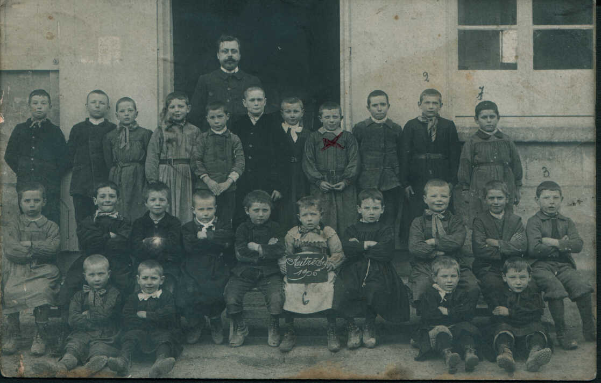
Classe 19061 élèves identifiés sur 26 Classe 1920 environ0 élèves identifiés sur 29
Classe 1920 environ0 élèves identifiés sur 29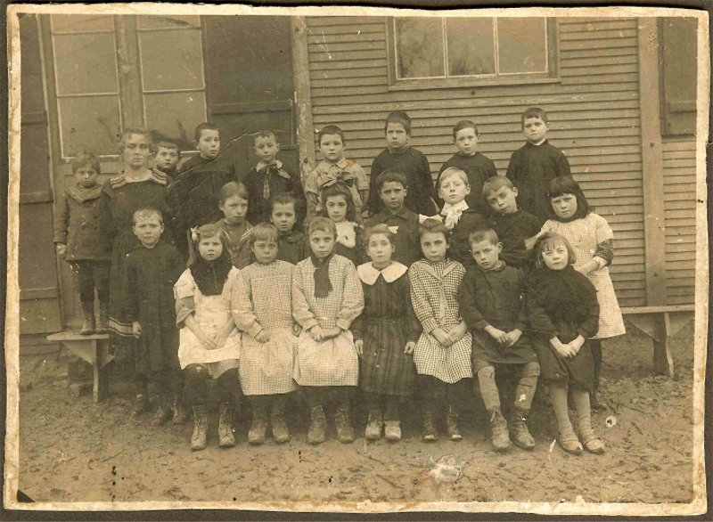
Classe 1921 environ1 élèves identifiés sur 24 Classe 193122 élèves identifiés sur 25
Classe 193122 élèves identifiés sur 25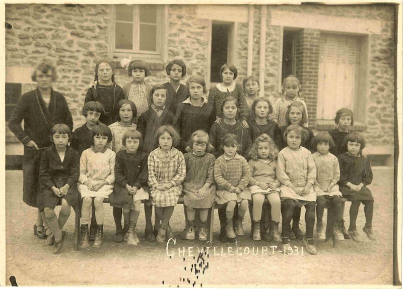
Classe 1931 Bis3 élèves identifiés sur 25 Classe 193528 élèves identifiés sur 32
Classe 193528 élèves identifiés sur 32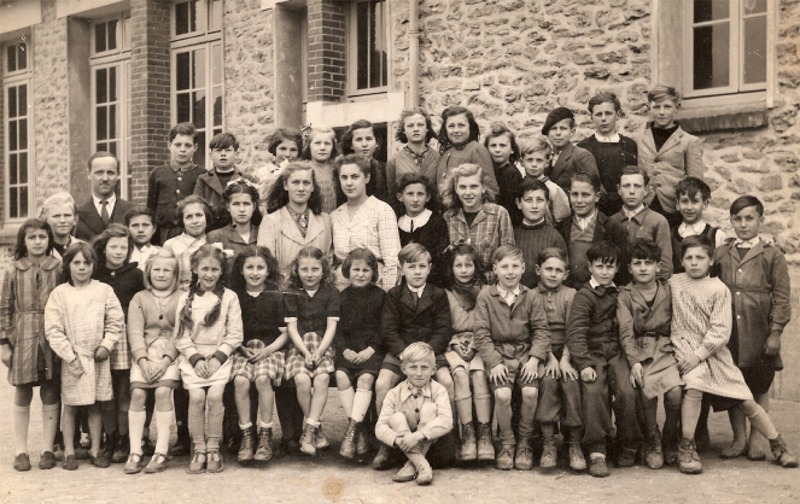
Classe 19470 élèves identifiés sur 42 Classe 1951 environ0 élèves identifiés sur 24
Classe 1951 environ0 élèves identifiés sur 24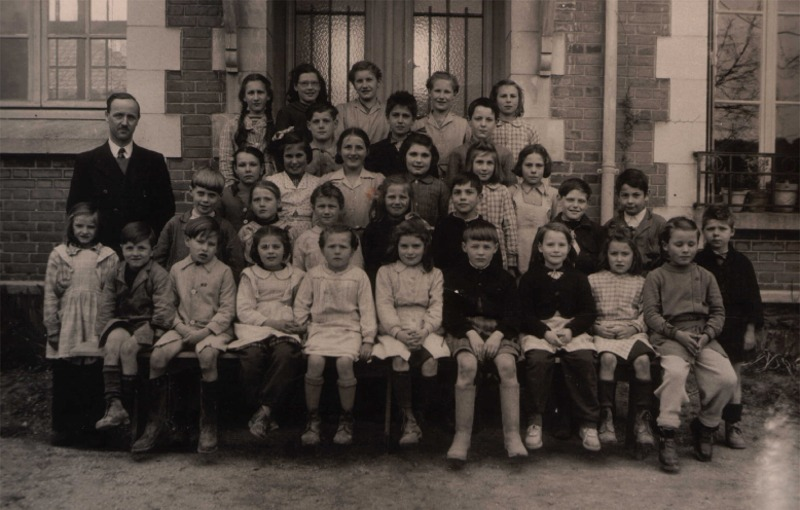
Classe 19518 élèves identifiés sur 33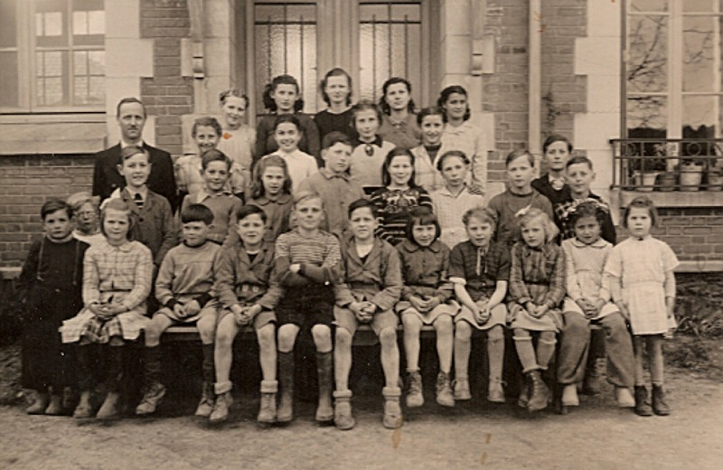
Classe 1951 B0 élèves identifiés sur 31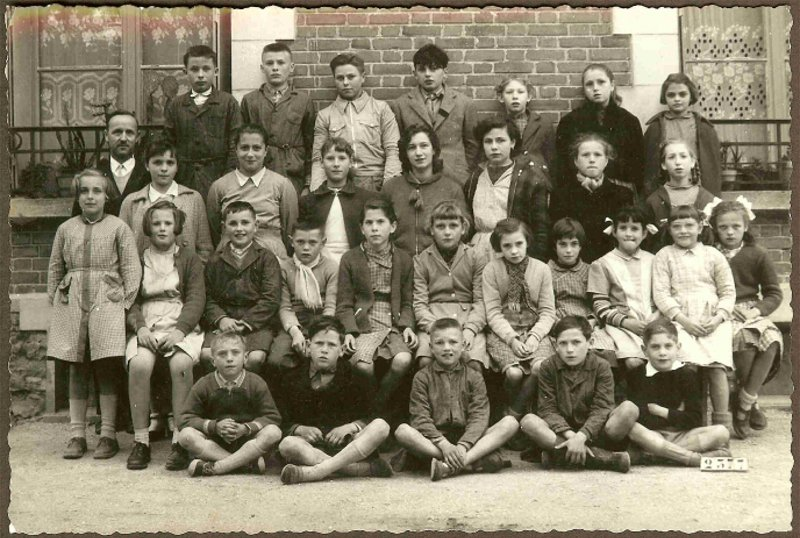
Classe 1953 environ0 élèves identifiés sur 31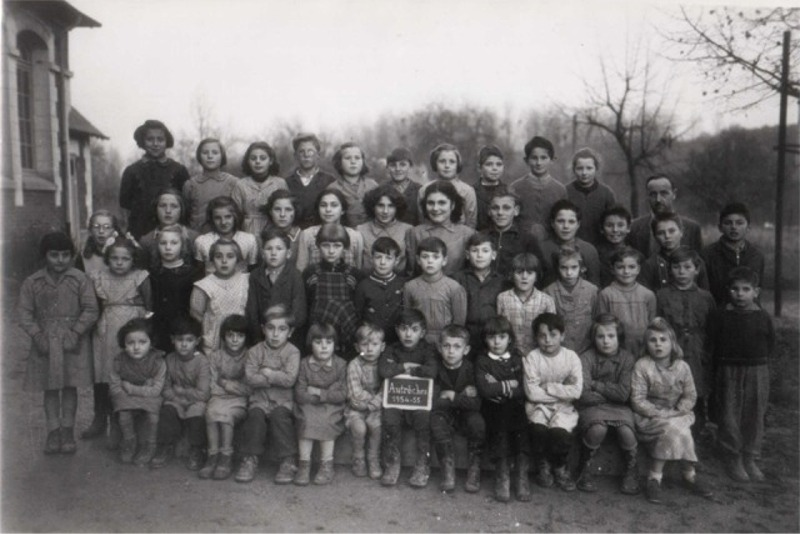
Classe 195432 élèves identifiés sur 49 Classe 195626 élèves identifiés sur 35
Classe 195626 élèves identifiés sur 35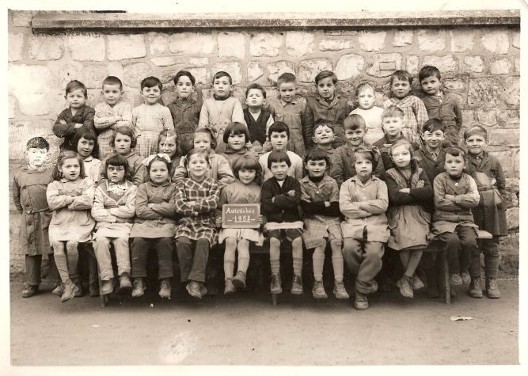
Classe 19580 élèves identifiés sur 0 Classe entre 1963 et 19671 élèves identifiés sur 77
Classe entre 1963 et 19671 élèves identifiés sur 77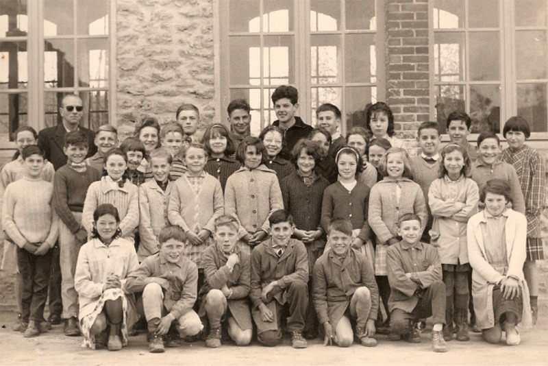
Classe 1963 - 19647 élèves identifiés sur 37 Classe 1963 - 1964 Bis0 élèves identifiés sur 36
Classe 1963 - 1964 Bis0 élèves identifiés sur 36 Classe 196424 élèves identifiés sur 24
Classe 196424 élèves identifiés sur 24Pour aller plus loin
Les instituteurs, de 1620 à nos jours Où reconstruire l'école après 1918 ?
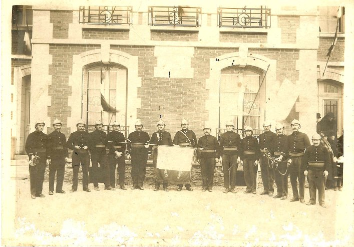